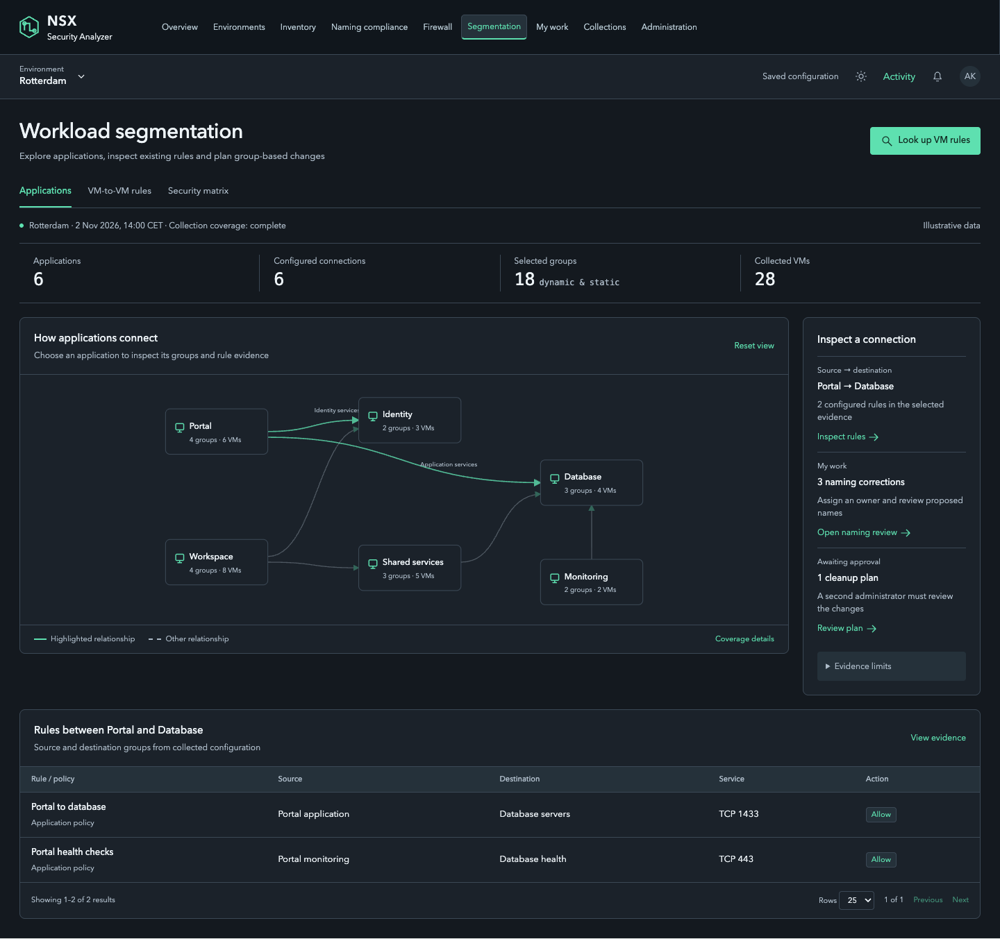
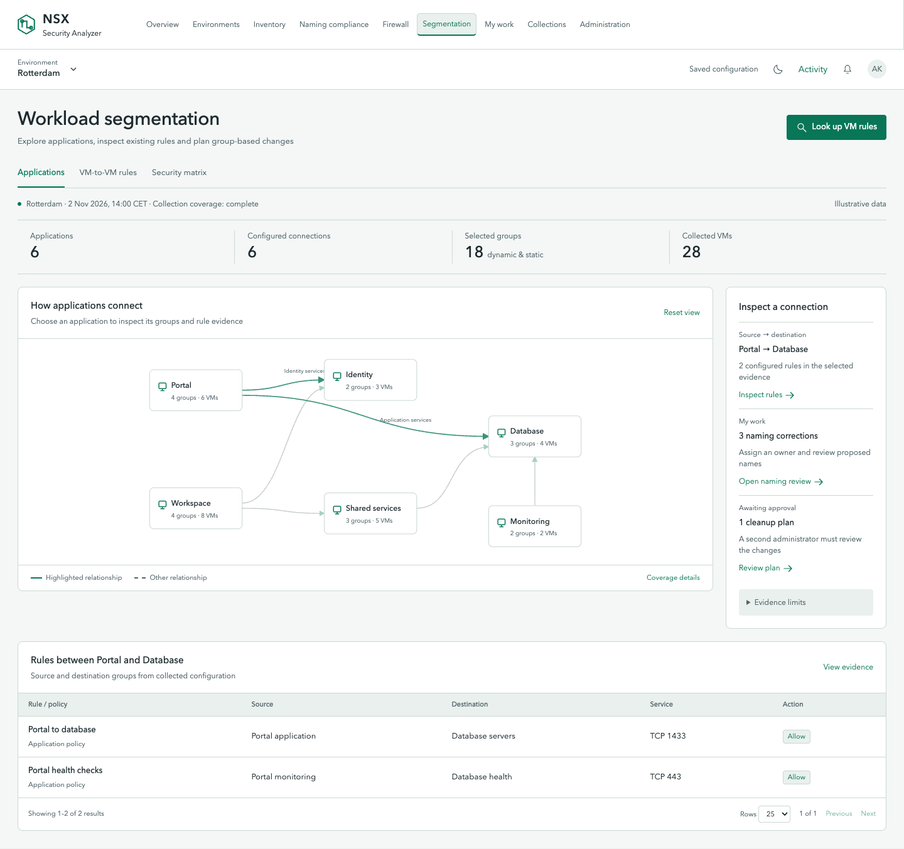
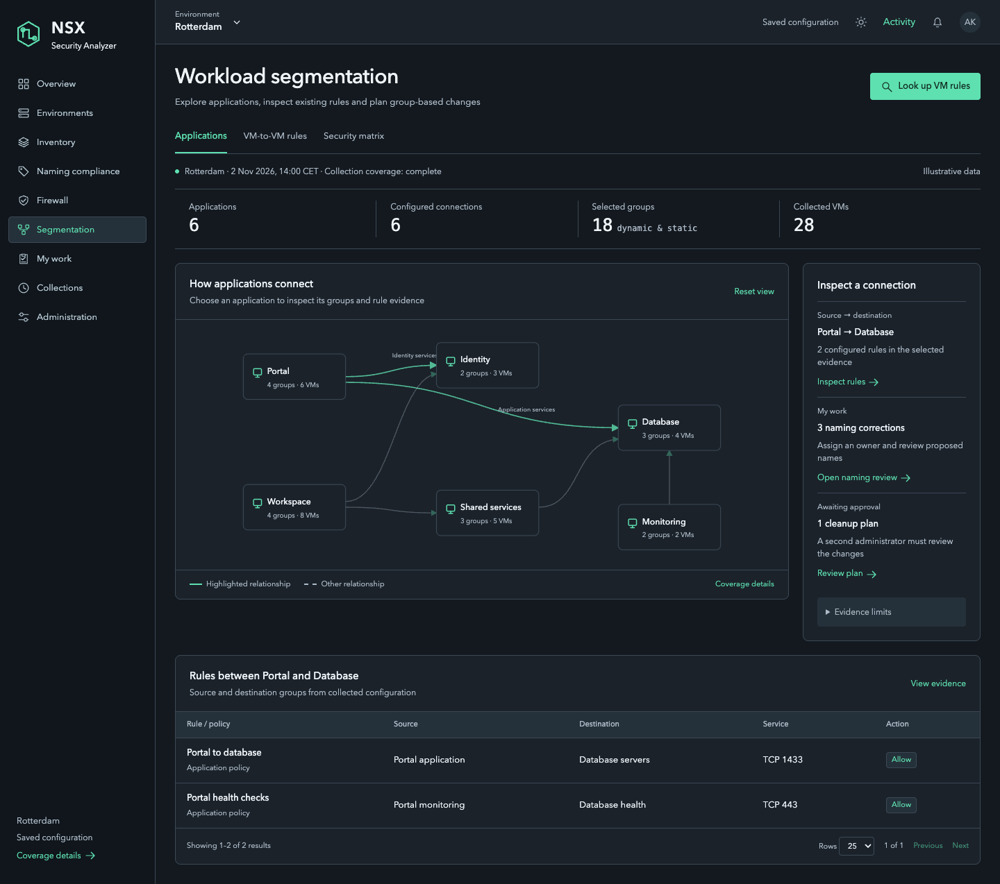
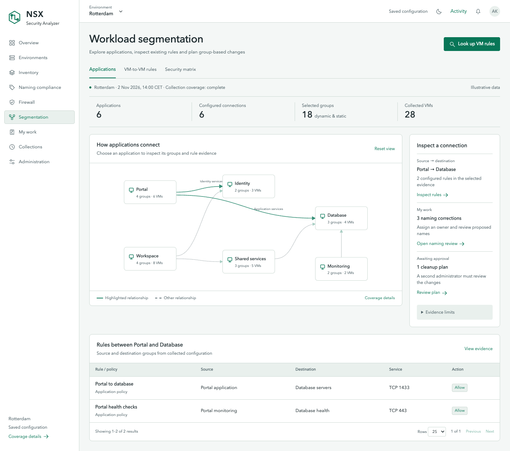
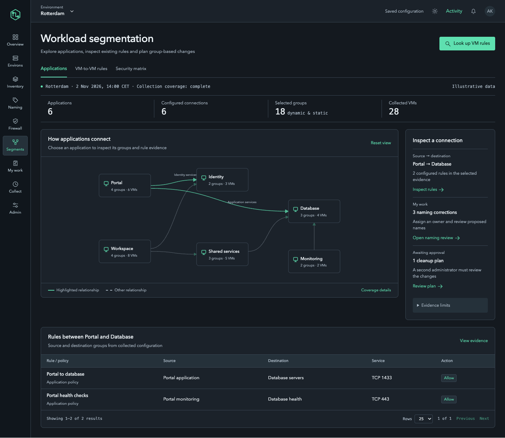
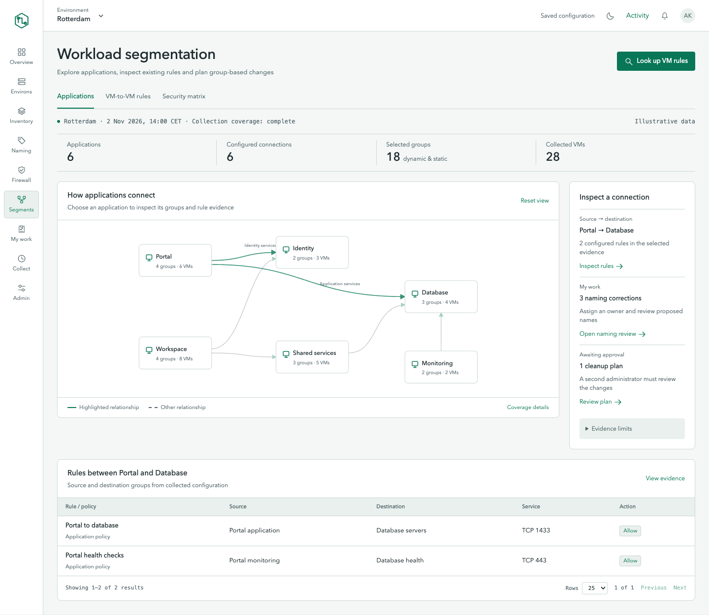
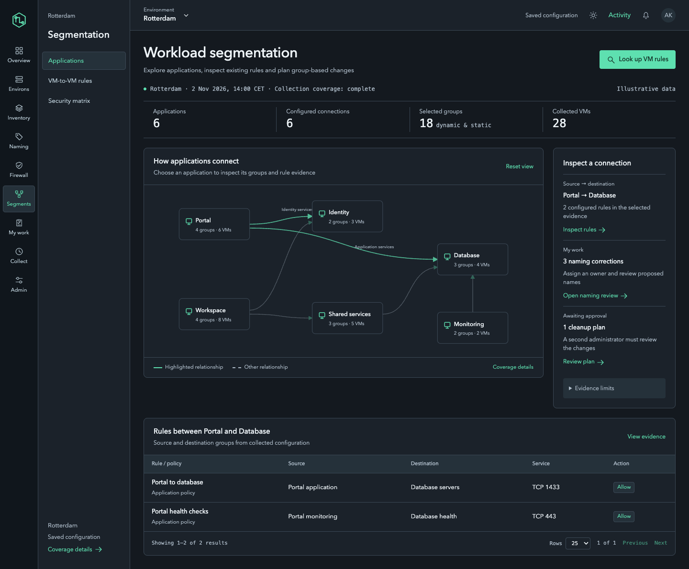
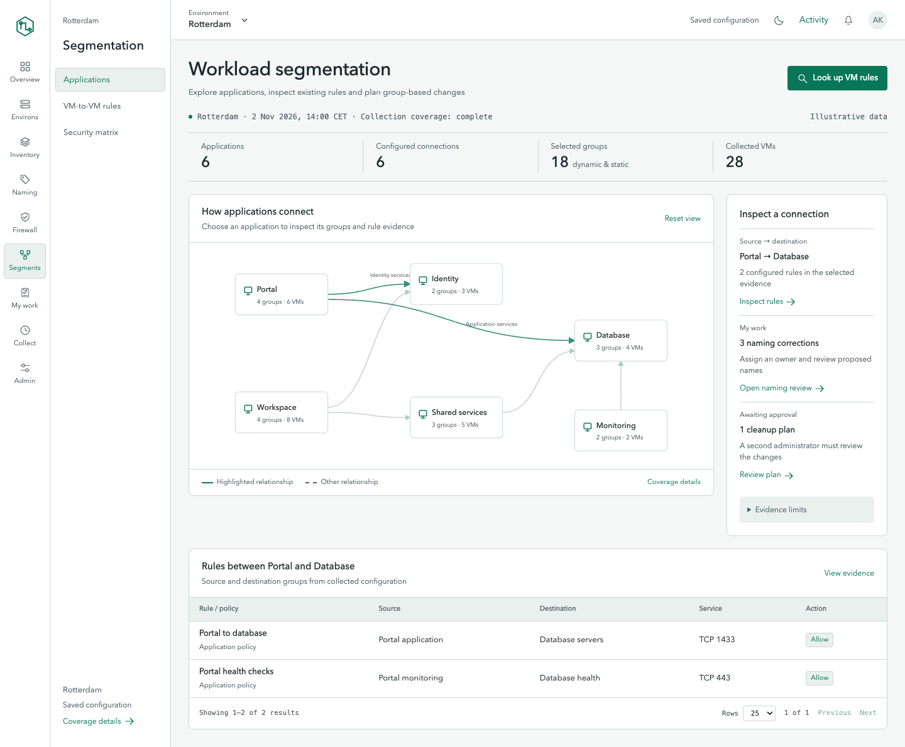
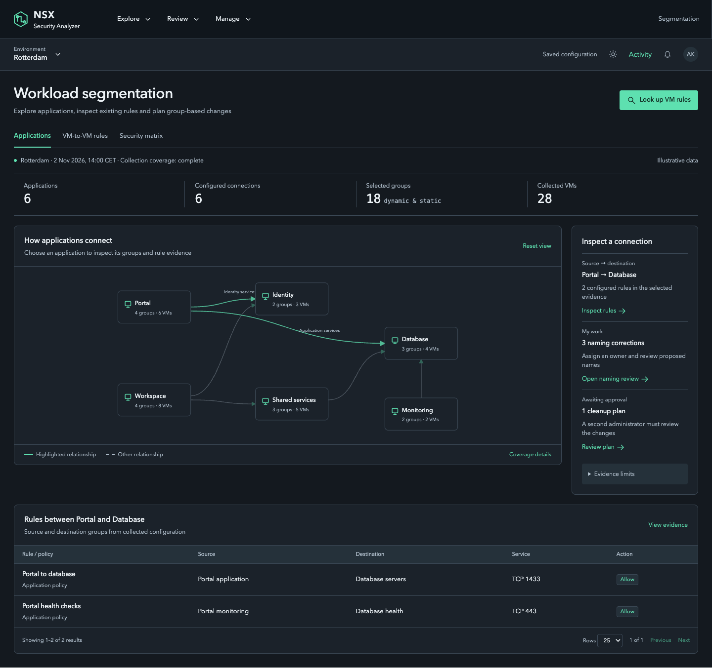
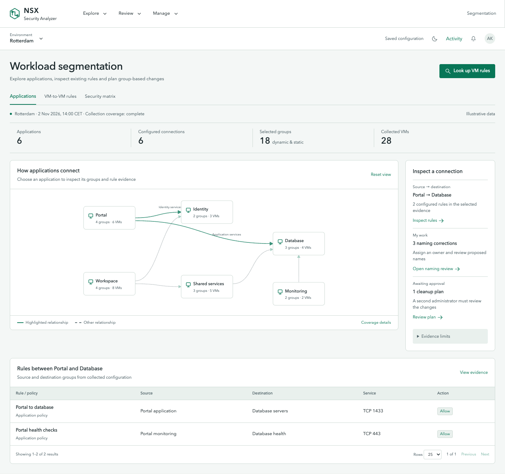

01. Original top bar
Relay as selected: all modules in one horizontal bar.

Dark mode · Same menu, same evidence
Light mode · Same menu, same evidenceRelay identity · Five menu alternatives, each in dark and light mode · Interactive chooser · Compare any two
Relay as selected: all modules in one horizontal bar.

Dark mode · Same menu, same evidence
Light mode · Same menu, same evidenceA persistent labeled left menu with a quiet context bar.

Dark mode · Same menu, same evidence
Light mode · Same menu, same evidenceA narrow left rail with icons and short text labels.

Dark mode · Same menu, same evidence
Light mode · Same menu, same evidenceA module rail and a separate panel for the current workflow.

Dark mode · Same menu, same evidence
Light mode · Same menu, same evidenceExplore, Review and Manage open small task menus.

Dark mode · Same menu, same evidence
Light mode · Same menu, same evidence